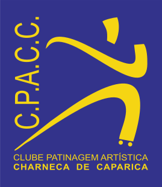

Documento de outorga única, válido enquanto o atleta se mantiver inscrito no clube, sem renovação periódica.
O presente documento tem por objeto a autorização de utilização da imagem do atleta em materiais fotográficos e videográficos captados pelo CPACC no decurso da sua atividade desportiva. A divulgação dessas imagens nos canais de informação oficiais do clube carece de autorização de quem exerce as responsabilidades parentais, prestada nos termos que se seguem.
A presente autorização é livremente prestada e não constitui condição de admissão ou de permanência no clube. O atleta cuja imagem não seja autorizada participa em todas as atividades em condições idênticas às dos restantes, limitando-se o clube a não divulgar a sua imagem.
É suficiente a indicação do número. O clube não conserva nem reproduz o documento de identificação.
Assinalar Sim ou Não em cada linha. A autorização pode ser concedida para uns canais e recusada para outros. A ausência de indicação equivale a recusa.
| Canal | Sim | Não |
|---|---|---|
| Sítio oficial do clube patinagemcharneca.pt | ||
| Redes sociais do clube Instagram e Facebook, nas páginas oficiais do CPACC | ||
| Materiais de divulgação institucional Cartazes, folhetos, apresentações e material destinado a patrocinadores | ||
| Órgãos de comunicação social Imprensa, rádio e publicações noticiosas, mediante solicitação destes |
3.1. Âmbito material. A autorização abrange as fotografias e os registos videográficos recolhidos em treinos, provas, galas, estágios e demais eventos promovidos pelo clube, em contexto desportivo.
3.2. Obrigações do clube. O CPACC obriga-se a utilizar as imagens exclusivamente para divulgação da sua atividade, sem finalidade comercial e sem as ceder a terceiros para finalidades próprias destes; a não divulgar imagens captadas em situação de vulnerabilidade, designadamente em balneários ou em momentos de aflição ou lesão; a não associar à imagem a morada, o estabelecimento de ensino, os contactos ou quaisquer outros dados pessoais do atleta; e a retirar dos seus canais, com a maior brevidade possível, qualquer imagem cuja remoção seja solicitada pelo encarregado de educação, independentemente de revogação da presente autorização.
3.3. Divulgação em plataformas de terceiros. A divulgação nas redes sociais implica a disponibilização das imagens ao Instagram e ao Facebook, serviços operados pela Meta Platforms Ireland Limited, ficando as mesmas sujeitas às condições dessas plataformas e podendo ser objeto de tratamento fora do Espaço Económico Europeu. O clube não exerce controlo sobre esse tratamento, nem pode assegurar a eliminação de reproduções efetuadas por terceiros. A autorização pode ser concedida apenas quanto ao sítio oficial e recusada quanto às redes sociais, nos termos do ponto 2.
3.4. Tratamentos não abrangidos. A Federação de Patinagem de Portugal e as associações distritais divulgam as classificações das provas com identificação nominal dos atletas, ao abrigo dos respetivos regulamentos, em termos que não dependem do clube nem do presente documento. O clube não responde igualmente pelas captações ou divulgações efetuadas por terceiros, incluindo outros agregados familiares presentes nos eventos.
3.5. Duração e revogação. A autorização mantém-se válida enquanto o atleta se mantiver inscrito no clube e pode ser revogada a todo o tempo, sem necessidade de fundamentação, mediante comunicação para cpaccpatinagem@gmail.com ou pedido escrito entregue ao clube. A revogação produz efeitos para o futuro, não afetando a licitude do tratamento efetuado com base no consentimento previamente prestado. O material já impresso ou já difundido por terceiros pode não ser recuperável.
3.6. Proteção de dados. O responsável pelo tratamento é o Clube de Patinagem Artística da Charneca de Caparica, com os contactos indicados no cabeçalho, sendo o consentimento o fundamento de licitude, nos termos do Regulamento Geral sobre a Proteção de Dados. É assegurado o exercício dos direitos de acesso, retificação, apagamento, limitação do tratamento, portabilidade e oposição, bem como o direito de retirar o consentimento com a mesma facilidade com que foi prestado e o de apresentar reclamação à Comissão Nacional de Proteção de Dados.
3.7. Duplicado. O presente documento é outorgado em duplicado, ficando um exemplar na posse do clube, como prova do consentimento, e outro na posse do encarregado de educação.
Ao assinar o presente documento, declaro que exerço as responsabilidades parentais sobre o atleta identificado no ponto 1, que li e compreendi integralmente o seu conteúdo, e que autorizo o CPACC a utilizar material fotográfico e videográfico do atleta para divulgação da sua atividade nos canais de informação oficiais do clube, nos exatos termos assinalados no ponto 2.